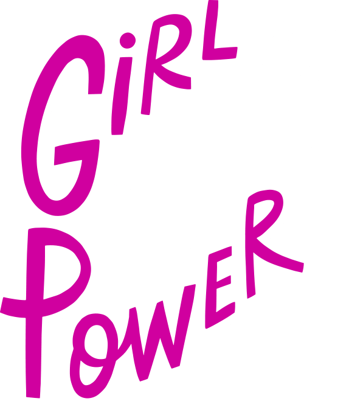
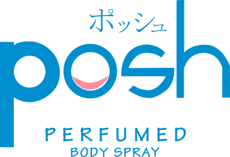

Topiknya sih sederhana ya, tapi jangan harap bisa sesederhana itu kalau cewek yang membahasnya
Bukan ribet kok, justru kita para cewek tuh percaya akan teori-teori warna yang ada
Cowok, kira-kira paham teori warna kita ini nggak ya?
Pink adalah warnanya para cewek
Istilah “pink for girls” adalah pandangan dari budaya barat.
Warna sebagai simbol gender semakin diperkuat ketika Dwight Eisenhower dilantik sebagai Presiden AS dan ibu negara, Mamie Eisenhower, tampil dengan mengenakan gaun berwarna pink.
Sejak saat itu persepsi bahwa pink melambangkan warna feminin mulai menyebar.
Harus melambangkan kepribadian mereka
Zodiak saja ternyata nggak cukup, karena pada hakikatnya, pilihan warna juga harus melambangkan kepribadian mereka.
Semua ungkapan yang biasa diucapkan cewek, ada benarnya juga lho!
Sebab
Apapun yang kamu pakai
akan cerminkan karaktermu

Cuma POSH Body Spray yang bisa:
Wangi tahan lama
hingga 12 jam
Menemani aktivitas seharianmu, apalagi ini mengandung Odour Fighting Active untuk cegah bau keringat dan bau matahari.
Cocok untuk setiap momen, mulai dari olahraga sampai dinner sekalipun
Sekarang giliran kamu nih Bela,
untuk tunjukkan
#ADayWithPosh
versi kamu!
Kira-kira, kamu tipe karakter yang seperti apa ya?